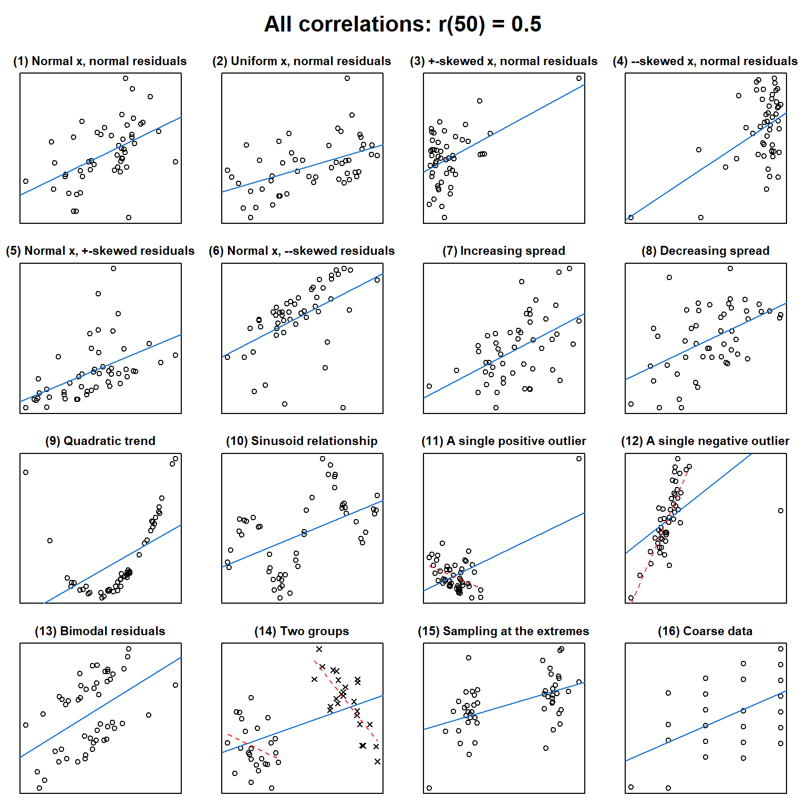

source("http://janhove.github.io/RCode/plot_r.R")
plot_r(r = 0.5, n = 50)
Jan Vanhove
November 21, 2016
In this post, I want to, first, help you to improve your intuition of what data patterns correlation coefficients can represent and, second, hammer home the point that to sensibly interpret a correlation coefficient, you need the corresponding scatterplot.
If you haven’t dealt with correlation coefficients much, a correlation coefficient, abbreviated as r, is a number between -1 and 1 that captures the strength of the linear relationship between two numeric variables. For instance, say you’ve asked 30 people about their weight and body height and plot these 30 (weight, height)-pairs in a scatterplot.
If all 30 data points fall perfectly on an increasing line, then the correlation between these two variables will be r = 1.
If, however, the general shape of the (weight, height) relationship is an increasing one but the 30 data points don’t fall perfectly on a single line, then r will be somewhere between 0 and 1; the closer the data points are to a straight line, the closer to 1 r will be.
If the relationship is a decreasing one, then r will lie between 0 and -1,
and if there’s no linear relationship between weight and height at all, r will be 0.
You’ll find plenty of examples below.
Correlation coefficients are popular among researchers because they allow them to summarise the relationship between two variables in a single number. However, a given correlation coefficient can represent any number of patterns between two variables, and without more information (ideally in the form of a scatterplot), the researchers themselves and their readers have no way of knowing which one.
To illustrate this, I’ve written an R function, plot_r(), that takes as its input a correlation coefficient and a sample size and outputs 16 quite different scatterplots that are all characterised by the same correlation coefficient. Below I first show and comment on how scatterplots for correlation coefficients of 0.5 and 0 based on 50 pairs might look like. Then, for those of you who don’t use R, I provide scatterplots for a couple of other correlation coefficients so you can develop a sense of what the patterns underlying these correlation coefficients could look like.
First, source() the plot_r() function or download. Then, in R, you can draw scatterplots corresponding to a correlation coefficient of r = 0.5 and 50 observations like this. (You’ll end up with a different set of scatterplots as the scatterplots are created randomly.)
Update (2023-08-08): The plot_r() function is now also part of the cannonball package for R, which you can download from GitHub.
I suspect that when people think of a relationship with a correlation coefficient of 0.5, they have something like plots (1) and (2) in their mind’s eye. For both plots, the underlying relationship between X and Y is linear, and the Y values are normally distributed about the best-fitting straight line. The minor difference between (1) and (2) is that for (1), X is normally distributed and for (2), X is uniformly distributed. These two plots represent the kind of relationship that r was meant to capture.
Plot (3) differs from (1) and (2) in that the X variable is now sampled from a skewed distribution. In this case, most X values are comparatively low but one X value is fairly large; if you run the code yourself, you may find that there are no outlying values or that there are more than one. Such a distribution may occur occur when X represents, for instance, participants’ performance on a task that was too difficult (floor effect). In such a case, one or a couple of outlying but genuine X values may (not will) have ‘high leverage’, that is, they may unduly affect the correlation coefficient by pulling it up or down.
The problem in (4) is similar to the one in (3), but now most X values are comparatively large and a handful are fairly low, perhaps because X represents participants’ performance on a task that was too easy (ceiling effects). Here, too, outlying points may have ‘high leverage’, i.e., they may unduly affect the correlation coefficient such that it doesn’t accurately characterise the bulk of the data.
Plots (5) and (6) are variations on the same theme as in plots (3) and (4): The Y values aren’t normally distributed about the regression line but are skewed. In such cases, too, some outlying but genuine Y values may (not will) have ‘high leverage’, i.e., they may pull the correlation coefficient up or down much more than ordinary data points.
Plots (7) and (8) are two examples where the variability of the Y values about the straight line increases and decreases, respectively, as X becomes larger, though admittedly, it isn’t very clear in this example. This is known as heteroskedasticity. The main problems with blindly relying on correlation coefficients in the presence of heteroskedasticity, in my view, are that (a) ‘r = 0.5’ both _under_sells how well Y can be estimated from X for low (high) X values and _over_sells how well Y can be estimated from X for high (low) X values, and (b) by just reporting the correlation coefficient you gloss over an important aspect of the data. Additionally, heteroskedasticity may affect your inferential statistics.
Plot (9) illustrates that correlation coefficients express the strength of the linear relationship between two variables. If the relationship isn’t linear, they’re hardly informative. In this case, r = 0.5 seriously understates the strength of the XY relationship, which happens to be non-linear (quadratic in this case). The same goes for (10), where r = 0.5 understates the strength of the XY relationship and misses out on the cyclical nature of the relationship.
Plots (11) and (12) illustrate how a single outlying point, e.g., due to a technical error, can produce misleading correlation coefficients. In (11), a single outlying data point produces the significant positive correlation; had only the 49 data points on the left been considered, a negative relationship would’ve been observed (the dashed red line). Blindly going by r = 0.5 mischaracterises the bulk of the data. In (12), the relationship is considerably stronger than r = 0.5 suggests for the bulk of the data (the dashed red line); the outlier pulls the correlation coefficient down. Plots (11) and (12) differ from plots (3) and (4) in that in plots (3) and (4), the X values were all sampled from the same–but skewed–distribution and are, as such, genuine data points; in plots (11) and (12), the outliers were caused by a different mechanism from the other data points (e.g., a coding error or a technical glitch).
In (13), the Y values are bimodally distributed about the regression line. This suggests that we have overlooked an important aspect of the data, such as grouping factor: perhaps the datapoints above the regression line were sampled from a different population than those below the regression line.
The situation in plot (14) is similar to but considerably worse than the one in (13): The dataset contains two groups, but unlike in (13), the overall trend captured by r = 0.5 betrays the fact that within each of these groups, the XY relationship is actually negative. Plot (14) will often, but not always, produce such a pattern, which is known as Simpson’s paradox.
Plot (15) depicts a situation where the researchers, rather than investigating the XY relationship along the entire X range, only investigated the cases with the most extreme X values. Sampling at the extremes inflates correlation coefficients (see reason no. 2 why I don’t particularly like correlation coefficients to begin with). In other words, if you took a sample of 150 XY cases and only looked at the 50 most extreme X observations, you’d end up with a correlation coefficient that is very likely to be larger than the one you’d observe if you looked at all 150 cases.
Plot (16), finally, is what I suspect many correlation coefficients actually represent. The X and Y data are lumpy, for instance, because they represent count data or responses to questionnaire data. I don’t think correlation coefficients for such patterns are deceptive per se, but we’re clearly talking about a different pattern than in plots (1) and (2).
The main point I want to make here is that r = 0 doesn’t necessarily mean that there’s no XY relationship. This is clear from plots (9) and (10), which evince strong non-linear relationships. Plots (11) and (12) similarly underscore this point: There exists a strong relationship for the bulk of the data, but this trend is cancelled out by a single outlying data point. Occasionally, in plot (14), a trend present in two subgroups may not be visible in an aggregated analysis; this doesn’t seem to be the case in this example, though.
If you want to store the data underlying one or all of the plots, you can set the optional showdata parameter to either all or a number between 1 and 16 corresponding to one of the plots:
I hope the plot_r() function helps you to develop a feel for what correlation coefficients may actually represent and that this post may convince more researchers to draw scatterplots before running any correlation analyses—or regression analyses, for that matter—and to actually show them when reporting correlations.
─ Session info ───────────────────────────────────────────────────────────────
setting value
version R version 4.3.1 (2023-06-16 ucrt)
os Windows 10 x64 (build 18363)
system x86_64, mingw32
ui RTerm
language (EN)
collate English_United Kingdom.utf8
ctype English_United Kingdom.utf8
tz Europe/Zurich
date 2023-08-08
pandoc 3.1.1 @ C:/Program Files/RStudio/resources/app/bin/quarto/bin/tools/ (via rmarkdown)
─ Packages ───────────────────────────────────────────────────────────────────
package * version date (UTC) lib source
cachem 1.0.8 2023-05-01 [1] CRAN (R 4.3.1)
callr 3.7.3 2022-11-02 [1] CRAN (R 4.3.1)
cli 3.6.1 2023-03-23 [1] CRAN (R 4.3.1)
crayon 1.5.2 2022-09-29 [1] CRAN (R 4.3.1)
devtools 2.4.5 2022-10-11 [1] CRAN (R 4.3.1)
digest 0.6.33 2023-07-07 [1] CRAN (R 4.3.1)
ellipsis 0.3.2 2021-04-29 [1] CRAN (R 4.3.1)
evaluate 0.21 2023-05-05 [1] CRAN (R 4.3.1)
fastmap 1.1.1 2023-02-24 [1] CRAN (R 4.3.1)
fs 1.6.3 2023-07-20 [1] CRAN (R 4.3.1)
glue 1.6.2 2022-02-24 [1] CRAN (R 4.3.1)
htmltools 0.5.5 2023-03-23 [1] CRAN (R 4.3.1)
htmlwidgets 1.6.2 2023-03-17 [1] CRAN (R 4.3.1)
httpuv 1.6.11 2023-05-11 [1] CRAN (R 4.3.1)
jsonlite 1.8.7 2023-06-29 [1] CRAN (R 4.3.1)
knitr 1.43 2023-05-25 [1] CRAN (R 4.3.1)
later 1.3.1 2023-05-02 [1] CRAN (R 4.3.1)
lifecycle 1.0.3 2022-10-07 [1] CRAN (R 4.3.1)
magrittr 2.0.3 2022-03-30 [1] CRAN (R 4.3.1)
memoise 2.0.1 2021-11-26 [1] CRAN (R 4.3.1)
mime 0.12 2021-09-28 [1] CRAN (R 4.3.0)
miniUI 0.1.1.1 2018-05-18 [1] CRAN (R 4.3.1)
pkgbuild 1.4.2 2023-06-26 [1] CRAN (R 4.3.1)
pkgload 1.3.2.1 2023-07-08 [1] CRAN (R 4.3.1)
prettyunits 1.1.1 2020-01-24 [1] CRAN (R 4.3.1)
processx 3.8.2 2023-06-30 [1] CRAN (R 4.3.1)
profvis 0.3.8 2023-05-02 [1] CRAN (R 4.3.1)
promises 1.2.0.1 2021-02-11 [1] CRAN (R 4.3.1)
ps 1.7.5 2023-04-18 [1] CRAN (R 4.3.1)
purrr 1.0.1 2023-01-10 [1] CRAN (R 4.3.1)
R6 2.5.1 2021-08-19 [1] CRAN (R 4.3.1)
Rcpp 1.0.11 2023-07-06 [1] CRAN (R 4.3.1)
remotes 2.4.2.1 2023-07-18 [1] CRAN (R 4.3.1)
rlang 1.1.1 2023-04-28 [1] CRAN (R 4.3.1)
rmarkdown 2.23 2023-07-01 [1] CRAN (R 4.3.1)
rstudioapi 0.15.0 2023-07-07 [1] CRAN (R 4.3.1)
sessioninfo 1.2.2 2021-12-06 [1] CRAN (R 4.3.1)
shiny 1.7.4.1 2023-07-06 [1] CRAN (R 4.3.1)
stringi 1.7.12 2023-01-11 [1] CRAN (R 4.3.0)
stringr 1.5.0 2022-12-02 [1] CRAN (R 4.3.1)
urlchecker 1.0.1 2021-11-30 [1] CRAN (R 4.3.1)
usethis 2.2.2 2023-07-06 [1] CRAN (R 4.3.1)
vctrs 0.6.3 2023-06-14 [1] CRAN (R 4.3.1)
xfun 0.39 2023-04-20 [1] CRAN (R 4.3.1)
xtable 1.8-4 2019-04-21 [1] CRAN (R 4.3.1)
yaml 2.3.7 2023-01-23 [1] CRAN (R 4.3.0)
[1] C:/Users/VanhoveJ/AppData/Local/R/win-library/4.3
[2] C:/Program Files/R/R-4.3.1/library
──────────────────────────────────────────────────────────────────────────────